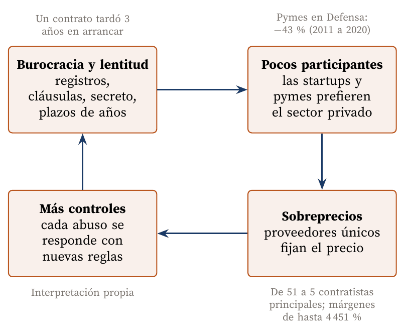

Por qué la burocracia aleja a los mejores innovadores y encarece lo que compramos todos
Carlos Luis Rojas Aragonés
Trabajar con el gobierno es difícil en términos generales, y cuando el tema es de seguridad lo es todavía más. El artículo de MIT Sloan lo ilustra con casos concretos que recoge Tina Srivastava, exingeniera jefe de programas de guerra electrónica en Raytheon: un contrato de la Fuerza Aérea con una startup, para necesidades «urgentes y críticas» de seguridad nacional, tardó tres años en arrancar, y el oficial de contratación dejó de atender a la empresa hasta que contrató a un abogado (Somers, 2019).
En mi opinión, esa fricción produce dos efectos:
Esos dos factores se refuerzan (Figura 1): hay gente muy buena que no quiere o no puede participar, y todos terminamos pagando el costo asociado a cada proyecto en forma de sobreprecios. Peor aún, cada abuso descubierto justifica más controles, que vuelven el proceso más lento y espantan a otros participantes nuevos.

Figura 1. El círculo vicioso de la innovación con el gobierno: la fricción reduce la competencia, la falta de competencia encarece las compras y los abusos traen más fricción. Elaboración propia con datos de Somers (2019), U.S. Government Accountability Office (2021), U.S. Department of Defense (2022) y DoD Office of Inspector General (2019).
El enlace al artículo de Deloitte está roto; lo leí en una copia de Internet Archive (Deloitte Australia, 2020). Propone diez innovaciones: telemedicina, realidad aumentada, impresión 3D, cirugía robótica, atención centrada en el paciente, dispositivos vestibles, inteligencia aumentada, blockchain, medicina de precisión y medicina regenerativa. Lo que me llama la atención es que ninguna nació en el ámbito militar: todas vienen del mercado civil. El propio artículo lo admite al decir que los pacientes militares tienen las mismas expectativas que los de cualquier otro sistema de salud, y recomienda buscar conocimiento en «fuentes no tradicionales», construir un ecosistema de socios y empezar con pilotos pequeños (Deloitte Australia, 2020).
Es decir, la receta de Deloitte es innovación abierta, y por eso choca de frente con las barreras que describe MIT Sloan. Una startup de telemedicina o de dispositivos vestibles que puede venderle a cualquier hospital privado en semanas difícilmente aceptará esperar años y firmar cientos de cláusulas para venderle al Departamento de Defensa.
La guerra en Ucrania es el mejor ejemplo de lo que pasa cuando la tecnología comercial entra sin el filtro tradicional. Starlink, un servicio de internet satelital para consumidores, se convirtió en la red de comunicaciones del frente, y en 2023 el Pentágono terminó comprando terminales adicionales para Ucrania (Alamalhodaei, 2023). Los drones comerciales pasaron a ser munición desechable: en 2023 Ucrania perdía unos 10 000 al mes (Watling & Reynolds, 2023), y en 2024 su Ministerio de Defensa compró más de 1,5 millones, el 96 % de fabricantes nacionales (Euromaidan Press, 2025). La ventaja no vino de una tecnología superior, sino de iterar más rápido y más barato que el adversario.
El caso contrario es IVAS, el visor de combate basado en el HoloLens de Microsoft, con un contrato de hasta 21 880 millones de dólares. En 2025 el contrato pasó a Anduril y, según la GAO, ninguna de las 10 000 unidades desarrolladas llegará a usarse en campo (Congressional Research Service, 2026). Adaptar un producto comercial no basta si se hace con el ciclo de adquisición tradicional, que hoy promedia más de 12 años para entregar una capacidad (U.S. Government Accountability Office, 2026).
Hay intentos de romper el círculo. La Defense Innovation Unit (DIU) usa contratos de prototipo con menos requisitos y aspira a adjudicar en 60 a 90 días; en la práctica tardó 142 en 2022 (Defense Innovation Unit, s.f.), lejos de su meta, pero muy lejos también de los años habituales. El resultado se nota en quién participa: el 87 % de sus proveedores son no tradicionales y el 38 % le vendía a Defensa por primera vez (Defense Innovation Unit, 2024). Cuando se baja la barrera, aparecen los innovadores que antes no querían o no podían entrar.
El problema del gobierno no es la falta de ideas, sino que su proceso de compra selecciona a quienes saben navegar la burocracia en lugar de a quienes mejor resuelven el problema. Lo mismo ocurre, a menor escala, en empresas grandes con procesos de compra pesados: si homologar a un proveedor nuevo toma seis meses, terminamos trabajando siempre con los mismos y pagando lo que nos piden. La lección es diseñar la puerta de entrada (pilotos pequeños, contratos simples, pagos rápidos) con el mismo cuidado que el proyecto, porque de ella depende quién se anima a tocarla.
Alamalhodaei, A. (2023, 1 de junio). More SpaceX Starlink terminals will go to Ukraine following new order from Pentagon. TechCrunch. https://techcrunch.com/2023/06/01/more-spacex-starlink-terminals-will-go-to-ukraine-following-new-order-from-pentagon/
Congressional Research Service. (2026, 20 de julio). Army’s Integrated Visual Augmentation System (IVAS)/Soldier Borne Mission Command (SBMC) (In Focus N.º IF13022). Congressional Research Service. https://www.everycrsreport.com/files/2026-07-20_IF13022_06226ecfaadb2bc19b6b6fd748e6d6d76f511305.html
Defense Innovation Unit. (2024). Annual report FY2023. https://www.diu.mil/2024-annual-report-files
Defense Innovation Unit. (s.f.). FY22 year in review. https://www.diu.mil/fy22-year-in-review
Deloitte Australia. (2020, 15 de septiembre). Innovation in the military health system: Ten emerging technologies that will drive the future of military health [Enlace original roto; consultado en la copia de Internet Archive del 22 de mayo de 2022]. http://web.archive.org/web/20220522022958/https://www2.deloitte.com/au/en/pages/public-sector/articles/top-10-military-health-system-innovations.html
DoD Office of Inspector General. (2019). Review of parts purchased from TransDigm Group, Inc. (DODIG-2019-060). U.S. Department of Defense. https://media.defense.gov/2019/Feb/27/2002093922/-1/-1/1/DODIG-2019-060.PDF
DoD Office of Inspector General. (2024, 25 de octubre). Audit of C-17 spare parts pricing (DODIG-2025-009). U.S. Department of Defense. https://media.defense.gov/2024/Oct/29/2003572815/-1/-1/1/DODIG-2025-009.PDF
Euromaidan Press. (2025, 10 de marzo). Ukraine plans to buy 4.5 million FPV drones in 2025 in massive $2.8 billion procurement surge. https://euromaidanpress.com/2025/03/10/ukraine-plans-to-buy-4-5-million-fpv-drones-in-2025-in-massive-2-8-billion-procurement-surge/
Somers, M. (2019, 13 de septiembre). Why the U.S. government is struggling with open innovation. MIT Sloan School of Management. https://mitsloan.mit.edu/ideas-made-to-matter/why-u-s-government-struggling-open-innovation
U.S. Department of Defense. (2022, 15 de febrero). State of competition within the defense industrial base. Office of the Under Secretary of Defense for Acquisition and Sustainment. https://media.defense.gov/2022/Feb/15/2002939087/-1/-1/1/STATE-OF-COMPETITION-WITHIN-THE-DEFENSE-INDUSTRIAL-BASE.PDF
U.S. Government Accountability Office. (2021, 14 de octubre). Small business contracting: Actions needed to implement and monitor DOD’s small business strategy (GAO-22-104621). U.S. Government Accountability Office. https://www.gao.gov/products/gao-22-104621
U.S. Government Accountability Office. (2026, julio). Weapon systems annual assessment (GAO-26-108457). U.S. Government Accountability Office. https://www.gao.gov/products/gao-26-108457
Watling, J., & Reynolds, N. (2023, 19 de mayo). Meatgrinder: Russian tactics in the second year of its invasion of Ukraine (Special report). Royal United Services Institute. https://static.rusi.org/403-SR-Russian-Tactics-web-final.pdf